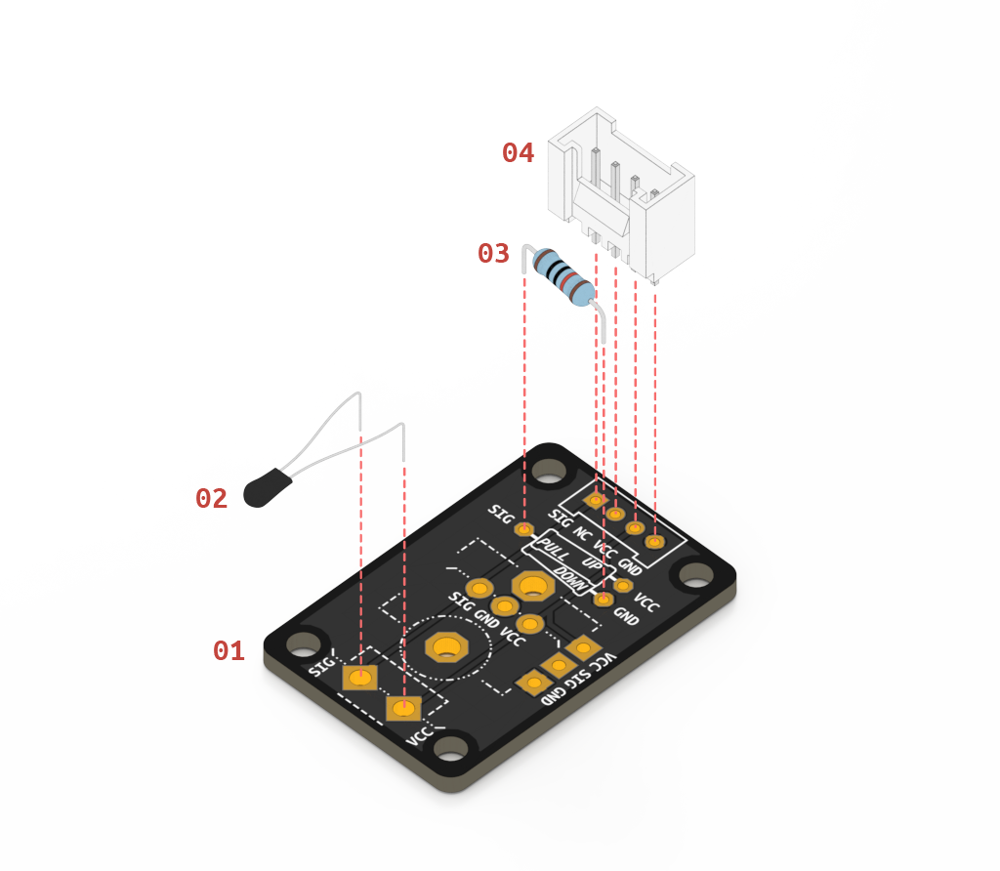

If you have never soldered before, please carefully read the soldering tutorial before you proceed to the assembly instruction video.
You will need the following parts:
01 Custom Component Board
02 Thermistor
03 10kΩ Resistor
04 Grove Connector